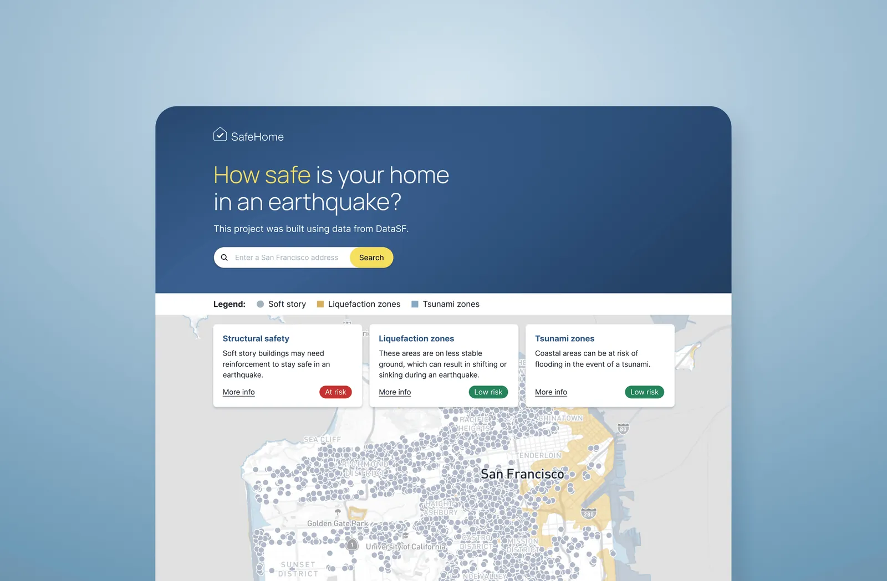
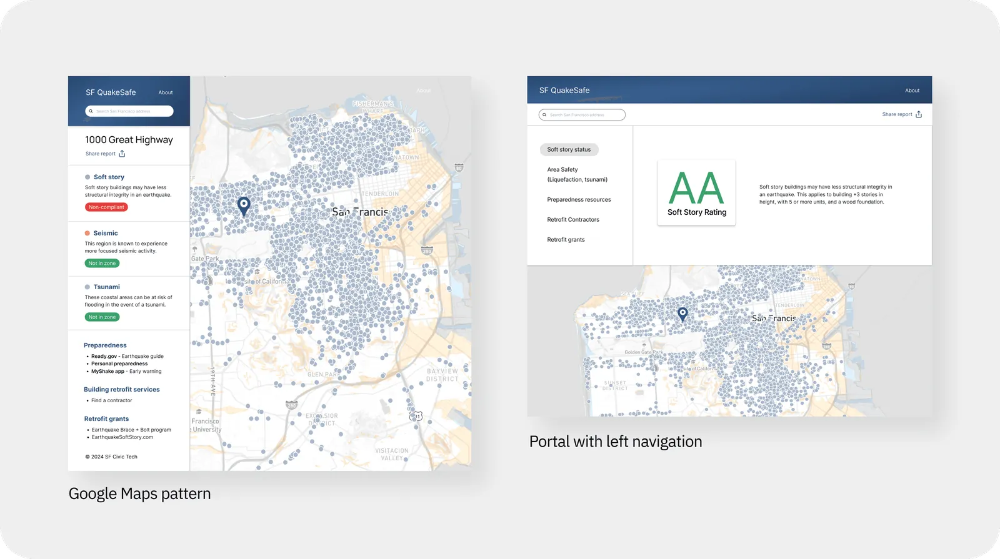
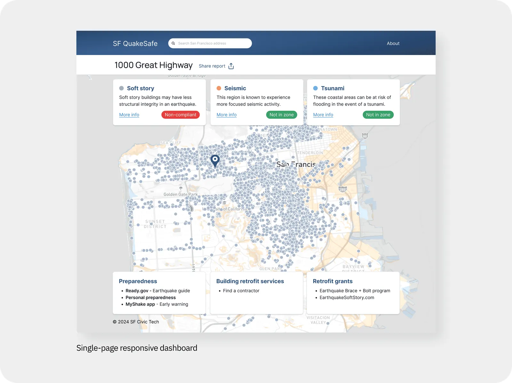
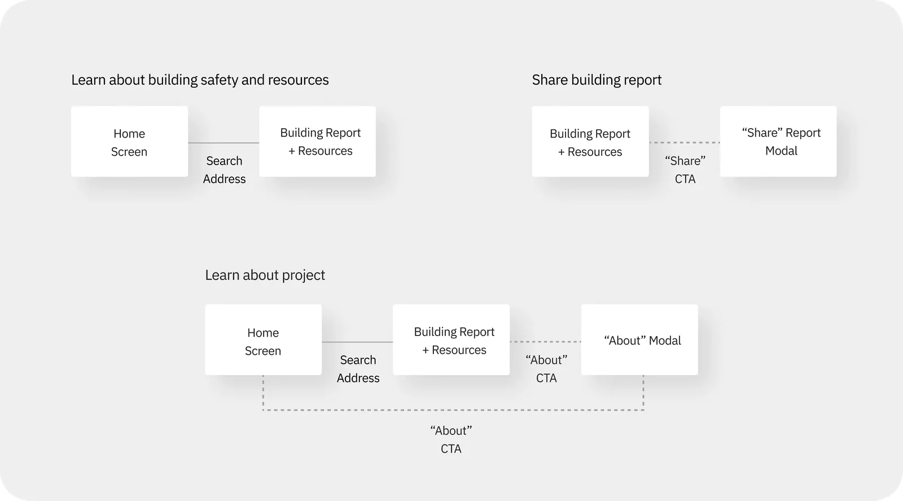
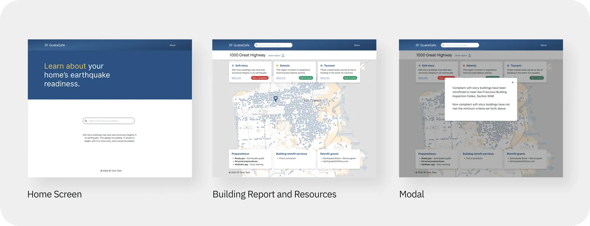
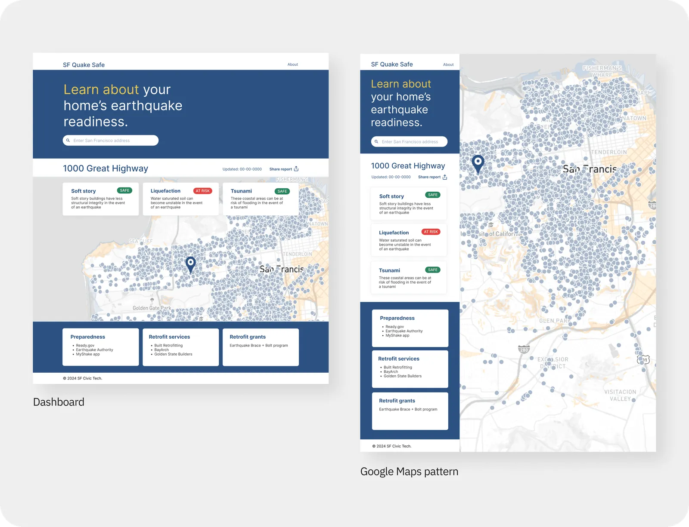
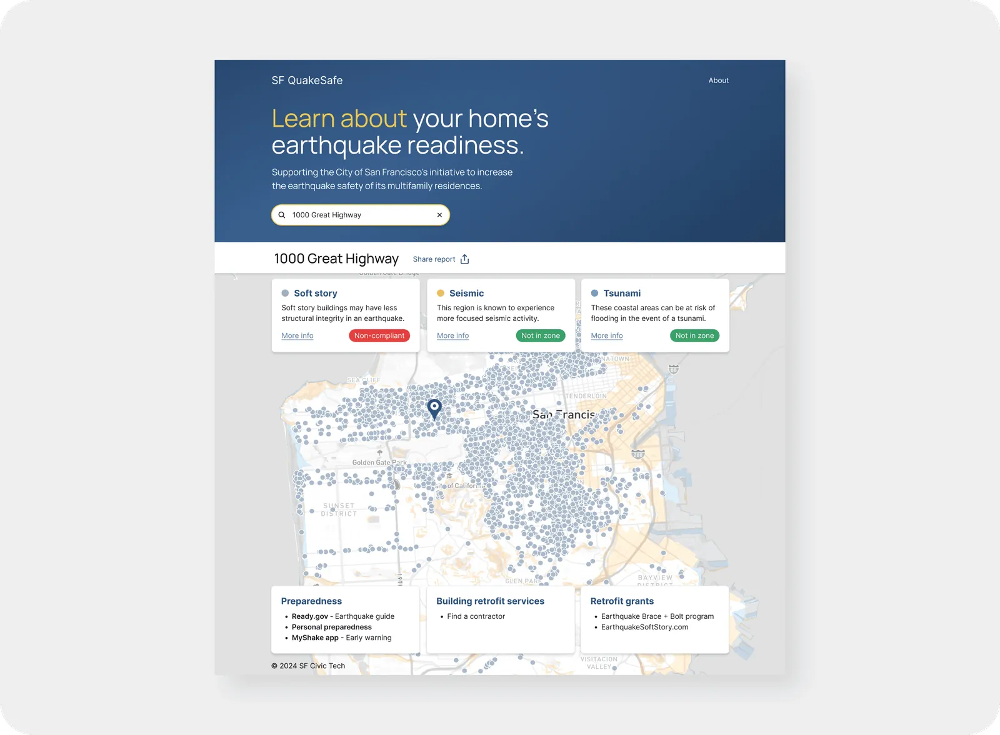
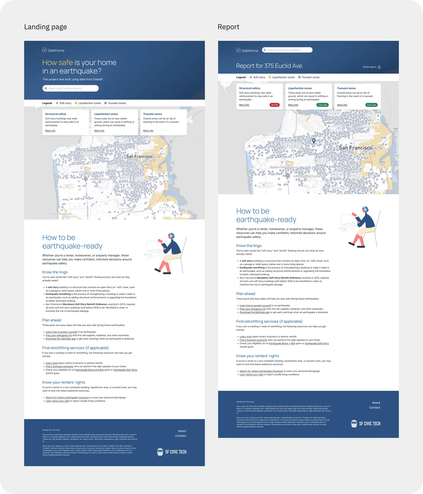

SafeHome
Making San Francisco’s earthquake safety data accessible to the general public.

Summary
In support of earthquake preparedness initiatives from the City of San Francisco, SafeHome makes obscure government earthquake safety data accessible to the general public, in addition to information on geological risks and preparedness resources. As lead product designer, I worked with engineering, data science, and product management to develop a web app from original research to MVP.
The problem
San Francisco is at risk for a major earthquake in the coming years, but public data around residential earthquake compliance and safety is currently hard to find and navigate.
- 63% chance of a 6.7 magnitude earthquake in the next 30 years
- 5,400 residents in housing that is not earthquake-safe*
- 400 multifamily buildings not earthquake-safe*
* Estimated
Understanding user needs
While the original scope was to make local earthquake safety data easier to access, we wanted to check user needs and validate the idea. Budget constraints limited our research to surveys, yielding upwards of 50 responses, which both confirmed the original idea and highlighted these additional priorities:
- Address lookup with building, liquefaction, and tsunami safety information
- General earthquake preparedness resources
- Browsable earthquake safety map of San Francisco
- Ability to share building safety report
- Information on the project and its data sources
- Clear, actionable, and reassuring stance around earthquake safety
Competitive analysis revealed some similar tools targeted at more technical users, while also highlighting the need for an accessible option unified with preparedness resources.
Exploring interface formats
Given the user priorities, I considered several archetypal layouts, built with Chakra UI for speed and per the engineering team. The interface archetypes considered:


Defining user flows
Once a layout was selected, I mapped easy ways for users to meet their needs.

Based on the user flows, three screen modes were identified as necessary:
- Home screen: address lookup and branding
- Building report and resources (dashboard)
- Modals: supporting information

Gathering stakeholder feedback
Throughout the design process, collaboration with the product team led to further refinement and testing. The data science side wanted users to be able to browse the map without entering an address, prompting a redesign to a single page. Interest in the Google Maps pattern also resurfaced from the engineering side, prompting A/B testing, which confirmed the dashboard as the preferred format.

During early research, we realized liability could be a concern, so I recommended reaching out to the City of San Francisco for guidance on how to approach data transparency. After a meeting with the City, we fine-tuned the language to match the City’s intent and give users a clearer understanding of how safety is being assessed.

Testing usability, visual design, and concept
In collaboration with the team, I designed a script to guide testing for usability, get visual design feedback, and revalidate the concept in moderated interviews with San Francisco residents over Zoom. The product manager and another designer helped facilitate testing. A pilot test allowed further refinement of the testing script and materials.
- 100% approved of product concept and visual
- 83% would visit when changing residences
- 83% had difficulty with the language
- 50% had confusion with the map
Based on the findings, I worked with the team to evaluate and prioritize several improvements, listed and illustrated below:
- Expand bottom three preparedness cards into a more approachable and useful content section
- Solve for map confusion with a more visible legend
- Add search button for clear call-to-action (not shown)
- Reduce jargon and make language more approachable throughout
- Introduce a new name (SafeHome) to allow for future expansions beyond earthquake safety
- Visually differentiate Report page, while maintaining browsable map on Landing page (with no input required to browse)

Impact and learnings
I led product design through MVP, with testing showing positive user sentiment and alignment with San Francisco government initiatives. As a public goodwill effort, sustained impact depends on factors beyond the design—organizational priorities, funding, and government adoption—and I came to see the absence of a business stakeholder as a meaningful constraint on the project’s long-term potential.
Additionally, surfacing this data publicly calls attention to what I estimated to be at least $25MM in repairs on the part of property owners to get their buildings to code. I wondered if the project was ethical, as perhaps the City is handling this issue on its own, and publicly surfacing this data could create fear in tenants and possible vacancies in buildings. Also, the local government did not respond to our outreach for endorsement or further involvement with the project.
In retrospect, I’d have used a more targeted, compensated research pool to sharpen findings.